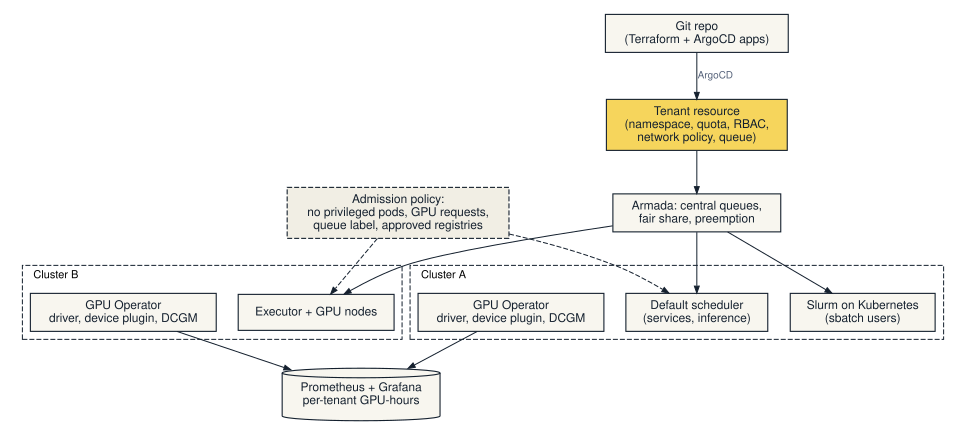

Design / Kubernetes and Slurm
Kubernetes GPU platform
My design for a multi-tenant GPU platform with failover, built on Kubernetes, Slurm and Armada.
The scenario
A neocloud rents GPU capacity for AI work, and also acts as failover capacity for other providers. Its tenants come from different industries and run training, fine-tuning, batch inference, serving and HPC-style jobs. My design is a multi-tenant GPU platform on Kubernetes and Slurm, built to carry that business.
| Business pressure | What the platform must do |
|---|---|
| Utilization is revenue | Keep GPUs busy: good scheduling, sharing where safe, fast job start, little fragmentation. |
| Failover is bursty | Absorb a partner's load at short notice, then give capacity back, without hurting paying tenants beyond the contract. |
| Mixed tenants | Healthcare, finance, media and research clients need different isolation, audit and priority. |
| Mixed workloads | Long training runs, short inference batches, and Slurm-submitted HPC jobs. |
| Trust | A cross-tenant leak is company-ending. Isolation is enforced and tested, not assumed. |
| Billing | Charge by GPU-hour per tenant, so usage must be measured accurately. |
| Operations | GPU nodes fail, drivers change, clusters multiply. Everything is code; upgrades are rolling and tested. |
Reference platform

Figure 1. One Tenant resource creates everything a tenant needs; one queue spreads work across clusters
I design it in layers. Foundation: clusters, network and identity from Terraform. Data: checkpoints and datasets stay close to the compute. Compute: the GPU Operator, with three schedulers for three workload types. Ingress: tenant APIs and inference endpoints behind policy. Delivery: ArgoCD from Git. Security, observability, reliability and cost apply to each.
Project 1: Cluster, GitOps and the GPU stack
Goal: A repeatable GPU cluster built from code, with GPU metrics visible.
Build:
- Terraform builds the cluster, networking and node groups (EKS, or k3s on one GPU instance to keep cost down).
- An ArgoCD app-of-apps repo deploys everything else.
- NVIDIA GPU Operator (driver, container toolkit, device plugin, GPU feature discovery, DCGM exporter) plus Prometheus and Grafana.
- GPU time-slicing so one GPU serves several pods, with what I observe recorded. Time-slicing gives no memory isolation between slices.
Done when: I can destroy and rebuild the cluster from Git, and a dashboard shows per-GPU utilization and memory.
Project 2: Slurm baseline, then Slurm on Kubernetes
Goal: Refresh plain Slurm, then run a Slurm cluster inside Kubernetes so HPC users keep sbatch and squeue.
Build:
- Baseline: controller, two or three compute nodes and an accounting database. Partitions, GPU GRES with cgroup enforcement, accounts, QOS and fair-share, preemption, backfill and reservations.
- Run a fixed GPU job mix and record wait time, utilization and fairness.
- Then deploy the Slinky slurm-operator with Helm so compute nodes run as pods, define a GPU partition, run the same job mix and watch pods scale with queue load.
Done when: I can explain why one job waited and another jumped ahead, and an sbatch GPU job runs on a pod with job, node and GPU accounting.
Project 2c (optional): Slurm on EC2 with AWS ParallelCluster
Goal: A third way to run Slurm, on cloud VMs that appear with demand, to compare with Slurm on Kubernetes and to model cloud bursting for failover.
Build:
- One queue with a GPU compute resource, MinCount 0 and a small MaxCount.
- Submit the same job mix; watch dynamic nodes start when jobs wait and terminate when idle.
- Measure cold start (submit to running) and idle cost.
Done when: I can show a node boot from zero for a pending job, with a cold-start time and an idle cost per hour.
Project 3 (stretch): Slurm bridge
Goal: Let Slurm scheduling logic place native Kubernetes pods beside normal ones.
Build:
- Install slurm-bridge and run pods through it next to ordinary pods.
- Compare placement and wait times with the default scheduler for the same pod set.
Done when: A pod is scheduled by Slurm and I can explain what differs from default scheduling.
Project 4: Armada, multi-cluster queues and fair share
Goal: A central queue that dispatches batch work across more than one cluster.
Build:
- Armada server and Lookout UI on the control plane, an executor on each of two clusters.
- Queues per tenant with priorities; GPU jobs through armadactl; test fair share, preemption and gang scheduling.
Done when: Two tenants contend for the same GPUs and I can show fair-share and preemption behavior in Lookout and in numbers.
Project 5: Failover scenario and GPU-hour metering
Goal: Show the neocloud story end to end: partner load arrives, tenants are protected, usage is billed.
Build:
- A "failover" queue with the highest priority and a quota cap, and a "batch" tier that can be preempted.
- Simulate a partner outage with a burst of jobs; capture queue wait, preemptions and utilization.
- Per-tenant GPU-hours from DCGM metrics joined with namespace labels, in Grafana.
- Checkpoint and resume for a training job, so preempted work is not lost.
Done when: A repeatable script runs the scenario and produces a one-page report.
Project 6: Security and multi-tenancy
Goal: Enforce isolation with policy and test that it holds.
Build:
- Namespace per tenant with RBAC, ResourceQuota, LimitRange, default-deny NetworkPolicy and Pod Security standards.
- OPA Gatekeeper or Kyverno: no privileged pods, GPU requests required, queue label required, approved registries only.
- Workload identity to cloud resources with narrow roles.
- Automated tests that try cross-tenant access and must fail.
Done when: A policy violation is rejected at admission, and the cross-tenant tests all fail as expected.
Project 7: Tenant operator
Goal: A controller that turns one Tenant resource into everything a tenant needs.
Build:
- Kubebuilder project with a Tenant CRD: namespace, quota, RBAC, network policy and an Armada queue.
- Reconcile loop with status and events, unit tests, deployed through ArgoCD.
Done when: Creating a Tenant creates all its resources, and deleting it cleans up.
Choosing a scheduler
The same GPU jobs go through each option, measuring wait time, GPU utilization and fairness.
| Option | Best at | Cost or caveat |
|---|---|---|
| Default scheduler | Services and simple jobs, pod by pod | No queues or gang scheduling by itself |
| Slurm (Slinky) | HPC-style jobs, backfill, accounting, GRES | A second scheduler, a different user model |
| Slurm on EC2 | Static plus scale-from-zero dynamic nodes | AWS-only, VM cold start, idle-cost control |
| Slurm bridge | Slurm logic placing Kubernetes pods | More moving parts |
| Armada | Queued batch across clusters, fair share | CNCF Sandbox, extra components |
| Volcano or Kueue | Queues and gang scheduling inside Kubernetes | Outside this build |
Environment and cost
- Free: kind or k3d with a fake GPU operator for scheduling, quotas, policy and Armada.
- Cheap real GPU: one spot T4 (g4dn) for a few hours at a time gives time-slicing and real DCGM metrics.
- MIG: needs Ampere or Hopper data-center GPUs; covered by configuration or a one-afternoon rental.
- Cleanup: everything in Terraform, one destroy command, a cost check after every session.
What it produces
- A repo with README, architecture diagram and demo script.
- A "what broke and how I fixed it" log.
- The scheduler comparison filled from measurements.
- The failover report: queue wait by tier, preemptions, utilization, cross-tenant test results.
- Grafana views of GPU and per-tenant usage.
Generalized write-up. No client or employer identifiers.